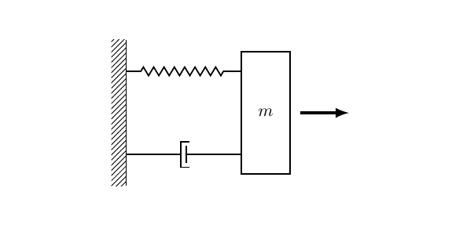

看状态空间 的笔记
对于如下的“弹簧-质量-阻尼系统”，其中k 为弹簧弹性系数、d 为阻尼系数：

定义质量m 向右为正方向，那么对于输入外力f(t)，则有输出x：mx¨=f(t)−kx−dx˙
对上式进行拉氏变换可以得到：ms2X(s)+kX(s)+dsX(s)=F(s)，则该系统的传递函数为：
G(s)=ms2+ds+k1(1)
构建空间状态方程组
我们可以选择系统的两个状态z1=x,z2=x˙，则有：
[z1˙z2˙]=[0−mk1−md][z1z2]+[0m1][F(t)]
而系统的输出：
X(t)=[10][z1z2]+[0][F(t)]
写作一般形式：
Z˙=AZ+BUY=CZ+DU(2)
状态空间方程与传递函数之间的关系
对系统的状态空间方程左右两端进行拉氏变换，得到：
sZ(s)=AZ(s)+BU(s)(3.1)
Y(s)=CZ(s)+DU(s)(3.2)
将3.1左右移项可得(sI−A)Z(s)=BU(s，左右同时左乘(sI−A)−1，可得：
Z(s)=(sI−A)−1BU(s)(3.3)
将式3.3 带入3.2 可得：
Y(s)=C(sI−A)−1BU(s)+DU(s)(3.4)
则系统的传递函数为：
G(s)=U(s)Y(s)=C(sI−A)−1B+D(4)
如何求矩阵的逆矩阵？
A−1=∣A∣A∗
其中A∗，是矩阵A 的伴随矩阵，对于二阶矩阵来说有一口诀：主对调，副变号
∣A∣ 即为行列式的值，对于二阶矩阵来说，等于：主对角线的积-副对角线的积
对于上面“弹簧-质量-阻尼”系统的模型来说：
-
A=[0−mk−1−md]
-
B=[0m1]
-
C=[10]
-
D=[0]
-
I=[1001]
于是求得传递函数为：
G(s)=U(s)Y(s)=s2+mds+mkm1(5)
上下同时乘以m1，即可得到式1。
(sI−A)−1 决定了传递函数的极点，因为传递函数的分母是∣(sI−A)∣ 决定的，参照特征值与特征向量一节，这里的s 就是矩阵A 的特征值。所以矩阵A的特征值决定了系统的稳定性！